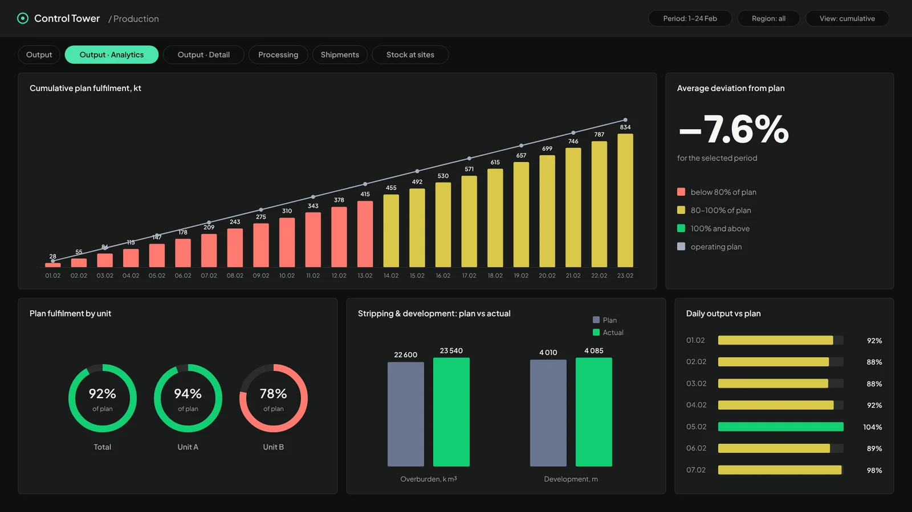
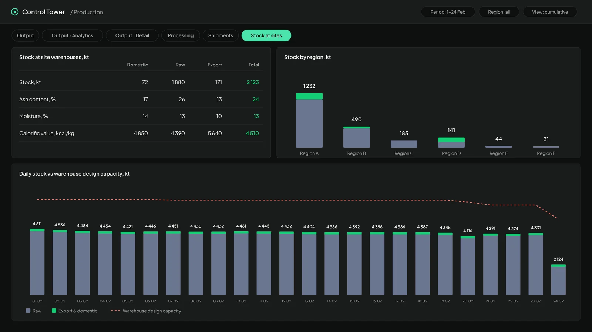
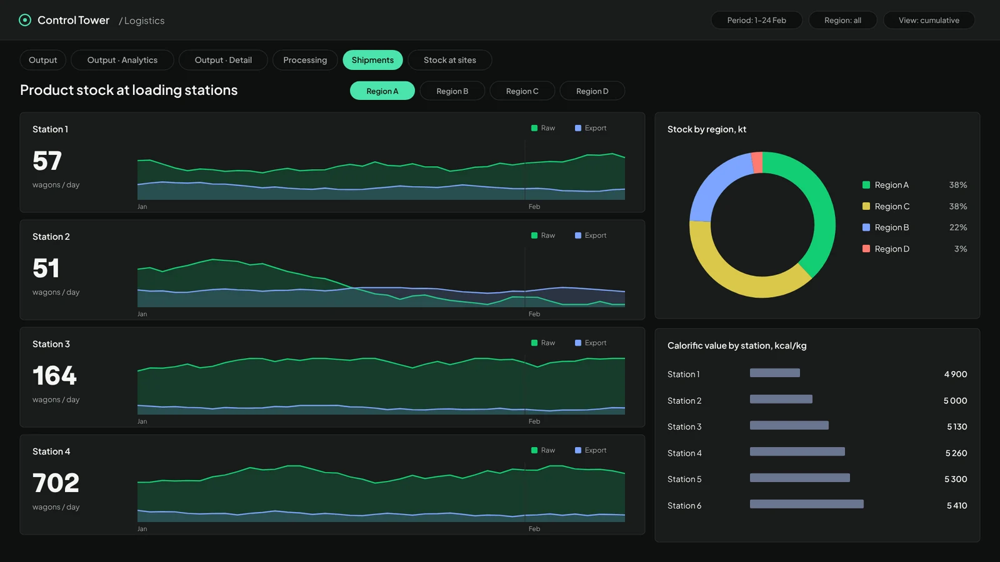
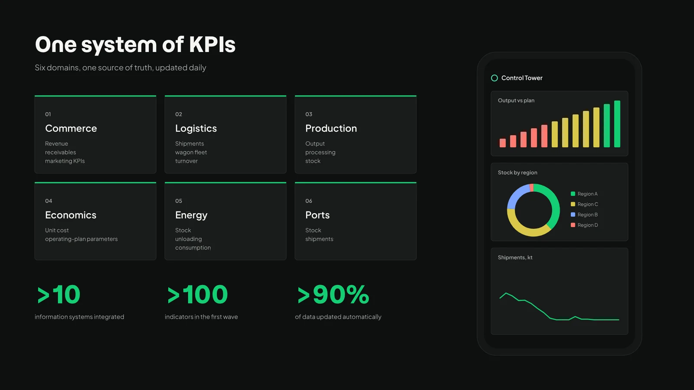

Our work / Dashboards & information systems / Supply-chain Control Tower
BI system
Supply-chain Control Tower
A management-reporting system for the whole supply chain: more than 10 source systems, over 100 KPIs and six business domains in one live view, on desktop and mobile.
- Client
- Industrial manufacturer
- Direction
- Dashboards & information systems
- Format
- BI system
- Tags
- Supply chain · Real-time monitoring · UX/UI
- >10information systems integrated
- >100indicators in the first wave
- >90%of data updated automatically
Challenge
The commercial division had no single tool for tracking the KPIs of its end-to-end process, from production to sales.
Operational data on output, shipments and sales sat in separate systems and reports, with no single source of truth. Several BI systems duplicated each other's data, and day-to-day operations ran on Excel reports compiled by hand at every stage of the supply chain. Analysing the current situation took too long, and decisions to deal with emerging risks came late.
Approach
- Identified the key stakeholders and worked with cross-functional teams to define business requirements for the interface and functionality.
- Selected the technology for data analysis and visualisation, assessing integration options for fast deployment, ease of use and flexible interface design.
- Designed the configuration of a single reporting system and built a prototype dashboard with real-time KPIs for two production units.
- Collected, verified and reconciled data from adjacent departments, and validated the consolidated data and collection methods.
- Ran design control and functional testing, piloted and launched the system.
- Wrote user guides and trained staff, then rolled the tool out to all departments.
What we delivered
- A data warehouse updated daily from more than 10 source systems.
- Dashboards across six domains: commerce, logistics, production, economics, energy and ports.
- Screens that can be tailored to an individual manager's requests.
- A role model that gives different levels of access to the data.
- A mobile version of the system.
Our role
hice. coordinated the project and designed it end to end: visual design, UX/UI, testing and roll-out.
Outcome
Launched in August 2024, the system replaced manual reporting with one live view of the supply chain. Managers now monitor and analyse key metrics in one place:
- live data on finished-goods warehouse loads at sites in every region;
- the level of finished-goods sales across all business lines;
- analysis of finished-goods stock held in warehouses.
Next steps
The roadmap moves the remaining indicators into a single KPI system with a profile for each executive, and adds scenario modelling, predictive analytics and AI assistants for working with data.




Interface recreated in the hice style. Names, regions and figures are anonymised and altered.
01 Sources
- >10 information systems
- Previously: manual Excel reports
02 Control Tower
- Daily-updated data warehouse
- >100 KPIs
- Role-based access
03 Decisions
- Six business domains
- Desktop and mobile
- Screens per manager